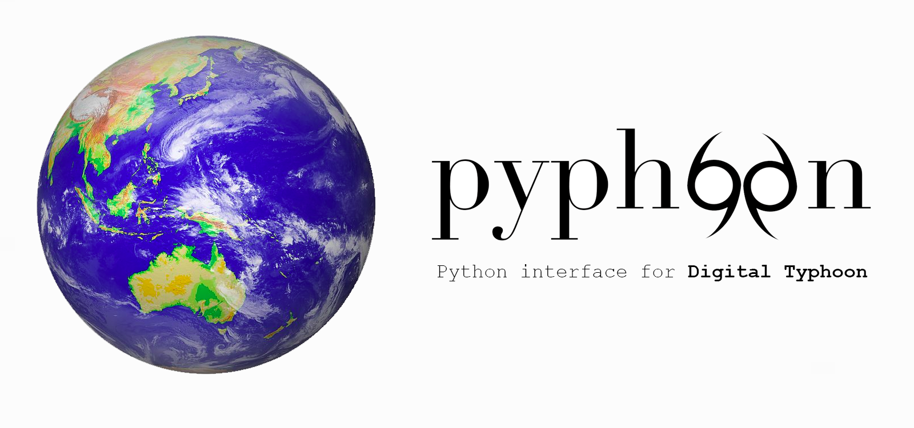

pyphoon: Python interface for Digital Typhoon¶
You just found pyphoon¶
pyphoon is a python library developed since 2017 by interns at Kitamoto Lab to provide a simple, easy and, more importantly, pythonic interaction with the Digital Typhoon dataset. It contains a wide set of tools to assist in the exploration and management of the building components of the dataset. More details can be found in the GitHub repository.
What can I find in here?¶
In this website you will find how to set up the environment to further develop this project, information about the data we are using, some library usage examples, the documentation of the library modules and much more. Use the sidebar to navigate all the content.
What is Digital Typhoon?¶
The Digital Typhoon project is an open project started by Prof. Kitamoto, which integrates different typhoon data sources. It provides more than 200,000 typhoon satellite images since 1979 and typhoon best tracks since 1951. By doing so, the Digital Typhoon project project attempts to assist the scientific community in its attempts to use data-driven and data-mining techniques on typhoon data.
Where do I get the data?¶
This project only makes sense if you have access to the Digital Typhoon dataset. Before installing the library make sure you have the data.
For inquiries, please address to Kitamoto-sensei
Installation¶
Currently only the development kit is available. This implies installing a docker image that fully supports all libraries required by pyphoon. Refer to Development environment for more details.
Support¶
You can post any bug reports and feature requests in Github issues. Upon demand other communication platforms may be opened.
As for now, lucasrodes and alex2gk are the responsible of the project development.